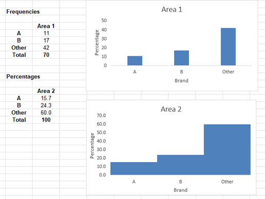
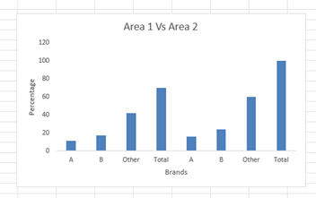
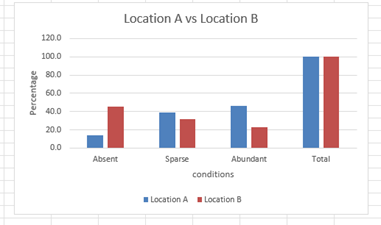
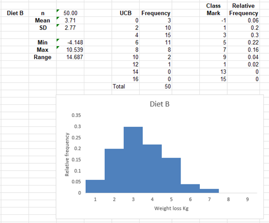

Georgia Niamh
Unit 9
Hypothesis testing worksheets graphs:
Task 1: (Exercise 9.1)

Interpretation of data: From this data it is clear that both area 1 and area 2 prefer other cereal best followed by brand by and finishing with brand A. it is interesting that two areas both seem to share the same preference.
Task 2: (Exercise 9.2)


Interpretation of data: From the graph for Exa 9.2E I can see that location A was more highly represented than location B. this is clear as location B has far more absences that location A meaning that the data was likely skewed in the direction of location A over location B.
Task 3: (Exercise 9.3)

Interpretation of data: From the data it appears that with diet B the average weight loss seems to be lower at around3 kg when compared to diet A. it also shows that less participants lost significant amounts of weight when on the diet. Diet A showed significant weight loss on a higher frequency for around 5 and 7 Kg this shows that diet A is more effective than diet B.
Case study: Accuracy of information Summary post
After reviewing the work of my fellow students there are several key areas that I have decided to reflect on in relation to the case study. Firstly, I did not reflect fully on who is to blame as Gore (2025) pointed out it is Whizzz that appears to be harmful, and it is this that is impacting Abi’s ethical standing. As pointed out also by Phatak (2025) it is the responsibility of Abi to uphold the ethics of research, and he should consider reporting the company for their poor ethics.
Overall, after reviewing the work of my peers I can now see the deeper predicament that Abi faces as he is stuck between wanting to impress his employer and his urge to conform to ethical standards. I think this case study has shown me that these issues are not always clean cut, and it can be difficult in practice to uphold the ethics of the BCS (2025), ACM (2018) and ASA (2021) when facing pressure from an employer. This case study has opened more ideas about how ethics should be addressed by companies as this area may impact future research or publication of results. I feel in this case I stand by my initial idea that Abi should follow the public interest disclosure act (1998) and whistle blow on the company’s unethical practices.
References:
ACM. (2018). ACM Code of Ethics and Professional Conduct. Available at: https://www.acm.org/code-of-ethics (Accessed 23 September 2025).
ASA (2011) The ASA Ethical Guidelines 2021. Available at: https://www.theasa.org/ethics/ (Accessed 23 September 2025)
BCS. (2022) Code of Conduct for BCS Members (Version 8). Swindon: BCS, The Chartered Institute for IT.
Gore, S. (2025) Initial post. Available at: https://www.my-course.co.uk/mod/forum/discuss.php?d=320626 (Accessed 1 October 2025)
Phatak, S. (2025) initial post. Available at: https://www.my-course.co.uk/mod/forum/discuss.php?d=321932 (Accessed 1 October 2025)
Public interest disclosure act (1998) The Public Interest Disclosure Act. Available at: https://www.gov.uk/government/publications/guidance-for-auditors-and-independent-examiners-of-charities/the-public-interest-disclosure-act--2 (Accessed 23 September 2025)